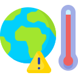

About Me
Ayden Junyoung Park
Founder & CEO
I am an ordinary high school student with a strong interest in environmental issues and data.
I am not an expert, nor am I affiliated with any environmental organization.
This website is not the result of an assignment or external instruction, but a personal project that began from questions and concerns I developed on my own.
Why I Started This Project
In news articles and advertisements, I often see terms such as “eco-friendly,” “carbon neutral,” and “sustainable.”
However, it is surprisingly difficult to clearly understand how much carbon these companies actually emit.
Some companies strongly promote environmentally friendly images, yet finding concrete information about their real carbon emissions or environmental impact is often challenging.
This gap consistently raised questions for me, and I began to ask myself: “Are these claims really true?”
To answer that question, I wanted to move beyond vague impressions or emotions and examine the issue through numbers and data.
That curiosity ultimately led me to create this website.

Why I Think This Matters
I believe climate change and air pollution are not distant future problems, but issues that directly affect the air we breathe today and the environment we will live in tomorrow.
While corporations and governments make major decisions related to the environment, the information behind those decisions is often difficult for students and citizens to access or understand.
By organizing and visualizing corporate carbon emission data, this website aims to provide a resource that allows anyone to evaluate environmental claims independently.
This project cannot solve every problem.
However, I believe it can serve as a starting point—one that encourages people to ask questions and verify claims for themselves.
What I Hope to Achieve Through This Project
- Help people verify corporate environmental claims through data
- Encourage critical thinking about greenwashing
- Show that students and citizens can access environmental data and turn awareness into action
Final Thoughts
This project is not perfect.
The data used may also have limitations.
Still, I believe that the act of questioning and trying to verify what we do not know is meaningful in itself.
If this website encourages even one more moment of reflection about environmental issues, then I believe this project has already achieved its purpose.
*Disclaimer
This website is a personal project created for learning and civic engagement purposes only.
It does not constitute professional or legal environmental analysis.
All data is based on publicly available sources, and some information may have limitations.